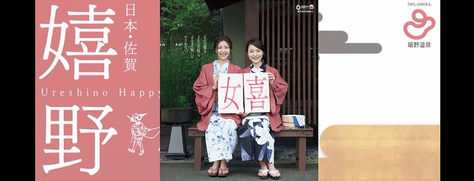

ロマ佐賀制圧戦
制圧戦全体マップ

地図
竹崎かに
嬉野温泉（うれしのおんせん）
うれしの温泉情報局
ワラスボ
写真
動画
1:25辺りに実際に動いているワラスボが・・・！！
案外かわいい一面もあるワラスボ
なんかさっき自分がつぶやいた画像、ワラスボがこう言っているように見えてきた。
ワラスボかわいい#ロマサガRS pic.twitter.com/lIiNAKrLja
— sagamax (@sagamax__) April 28, 2020
呼子のイカ
なんかさっき自分がつぶやいた画像、ワラスボがこう言っているように見えてきた。
ワラスボかわいい#ロマサガRS pic.twitter.com/lIiNAKrLja
唐津くんち
本物の唐津くんちはこんな雰囲気
佐賀バルーンフェスタ
ワグナスは毒耐性が低めに設定されているため、毒で攻める戦法が流行るが、人によってワグナスの毒ダメージが違うことが話題になる。
ロマサガＲＳにおける毒ダメージは最大ＨＰの1/10のため、各自の育成度合いに応じて敵の強さが変わっている模様。
それについてガチで検証する人まーさんのと私のとで毒ダメージと違いますね。
— sagamax (@sagamax__) May 2, 2020
私がワグナスに与える毒ダメージ：23,069
まーさんの場合：23,948
各自のキャラクタの成長に合わせてHP違うのか・・・。#ロマサガRS #ロマ佐賀 #ロマンシング佐賀 https://t.co/oYM18SKVEQ pic.twitter.com/C4IabwCnsp
つられて検証する私ステ上げたら毒ダメが変わりました！
— WizardII (@wizardii_) May 2, 2020
恐らく所持スタイルの中で最大ステ合計(小数点込み)で決まっていて、ステ合計10刻みでダメージが違うようです
ステ合計 毒ダメ
1123.59〜1126.80 22207
1130.06 22429#ロマサガRS pic.twitter.com/MMLRwSIMAU
ワラスボ後回しにしてワグナスの毒ダメージの検証をしていました。#ロマサガRS #ロマ佐賀 #ロマンシング佐賀
— sagamax (@sagamax__) May 2, 2020
ワグナス毒ダメ検証 https://t.co/2JP2CBstt9
佐賀めぐり！
満を持して登場した、佐賀コラボ制圧戦のラスボス「ワラスボ」。
ワラスボはラスボスのアナグラム・・・・・・ではないですよ（笑）
強すぎるワラスボにギブアップする河津神
#ロマサガRS #ロマンシング佐賀
— 河津秋敏 (@SaGa30kawazu) May 2, 2020
ワラスボに勝てません。皆さん、よろしくお願いします。
ワラスボを創造した人（ある意味神）ですら苦戦
連携でイカが5回飛んでくれたら #ワラスボ 倒せたところだったのにorz
— Seizan Shimazaki (@seizans) May 2, 2020
登場した新スタイル
タリアさんの新スタイルを祝うツイート
タリアさん、新スタイルおめでとうございます🎉 pic.twitter.com/rEpDZHAYR9
— 雨史さん@サガ好きな蛙 (@amemiyan_saga) May 2, 2020
ニュースにまで・・・！！
ニュースになってたw
— ばにふら@ロマサガRS(七分咲き (@NXISuB0XqC6CAL4) May 12, 2020
ワラスボも大暴れ ゲーム「ロマンシングサガRS」 佐賀舞台にコラボキャラとバトル - 毎日新聞 https://t.co/9M48ev5cto